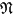
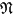

Edition status
 |  |  |  |  |  |
| |  | | | |
 Index Generalis
Index Generalis| Amberg | |
| Anonymus | |
| Apollo | |
| Apostel | |
| Augsburg | |
| Basel | |
| Biblia sacra vulgata | |
| Boethius, Anicius Manlius Severinus | |
| David | |
| Elsass | |
| Evangelist | |
| France | |
| Gabriel | |
| Gott | |
| Graduale und Antiphonale | |
| Grumelkut, Johann | |
| Guido d'Arezzo | |
| Der Heilige Geist | |
| Hieronymus, Sophronius Eusebius | |
| Hohnstein, Wilhelm von | |
| Jesaja ben Amoz | |
| Jesus Christus | |
| Jubal | |
| Juvenalis, Decimus Junius | |
| Linus | |
| Margareta von Antiochia | |
| Maria von Nazareth | |
| Maria Magdalena | |
| Martha von Bethanien | |
| München | |
| Niederlande | |
| Nürnberg | |
| Odon de Cluny | |
| Orpheus | |
| Pan | |
| Paumann, Conrad | |
| Schlick, Arnolt | |
| Silvanus [Waldner], Andreas | |
| Straßburg | |
| Teufel | |
| Dreifaltigkeit | |
| Virdung, Sebastian | |
Exempla| Biblia sacra vulgata |
| Boethius, Anicius Manlius Severinus |
| Juvenalis, Decimus Junius |
Thesaurus| Alter-Bass | |
| Alt, Altus, Altist | |
| Bass | |
| Blasebalg | |
| Blasinstrument | |
| Brevis | |
| Bund | |
| Chor | |
| Chorus, chorus vocalis, instrumentalis, mutatus, symphoniae, niedriger, hoher, choraliter | |
| Chroma | |
| Clavichord | |
| Clavier | |
| Clavis | |
| Clavizymbel | |
| Composition | |
| Conjuctus | |
| Consonantia [Consonanz] | |
| Contrabass | |
| Contrapunctus [Contrapunct] | |
| Coppel | |
| Diatessaron | |
| Diatonicum | |
| Diesis | |
| Diminutio | |
| Discantus | |
| Dissonantia [Dissonanz] | |
| Ditonus | |
| Enharmonicus | |
| Federkiel | |
| Fistula | |
| Flöte | |
| Fusa | |
| Geige [Geyge] | |
| Gesang | |
| Gesangsaite | |
| Glocke | |
| Harfe | |
| Harfentive | |
| Horn | |
| Instrumentum [Instrument] | |
| Kiel | |
| Kragen | |
| Laute [Lautte] | |
| Lautenist | |
| Lied | |
| Ligatura [Ligatur] | |
| Loch | |
| Lockpfeife | |
| Longa | |
| Lyra [Lirone], Großlyra | |
| Maxima | |
| Melodia [Melodie, Melodey] | |
| Mensura [Mensur] | |
| Minima | |
| Minor | |
| Modus | |
| Modur major | |
| Modus Minor | |
| Monochord | |
| Mundstück | |
| Musica | |
| Musica ficta | |
| Musica figurativa | |
| Musicus | |
| Mutatio | |
| Nota [Note] | |
| Octava [Diapason] | |
| Organist | |
| Orgel | |
| Orgelmacher | |
| Pauke | |
| Pausa [Pause] | |
| Pedal | |
| Pentachordon | |
| Pfeife | |
| Pfeifer (Pfeiffer) | |
| Pommer | |
| Posaune, Trombone | |
| Positiv [Positiff] | |
| Prolatio | |
| Prolatio perfecta | |
| Proportio [Proportion] | |
| Psalmodia | |
| Psalmus [Psalm] | |
| Psalterium | |
| Punctus | |
| Punctus additionis | |
| Punctus alterationis | |
| Punctus divisionis | |
| Quarta [Quarte, Quart] | |
| Querflöte [Querfloͤit] Fiffari de tiaverse, Zwerchpf | |
| Quinta [Quinte, Quint] | |
| Resonanz | |
| Responsorium | |
| Saenger | |
| Saite, Besaitet | |
| Saiteninstrument | |
| Scala | |
| Schlag | |
| Schlaginstrument | |
| Schlüssel | |
| Schwegel | |
| Semibrevis Secunda [Sekunde, Sekund] | |
| Semifusa | |
| Semiminima | |
| Semitonium Secunda [Sekunde, Sekund] | |
| Sesquioctava | |
| Solmisatio, solmisiren | |
| Stimme | |
| Synaphe | |
| Tabulatur | |
| Tempus | |
| Tempus imperfectum | |
| Tempus perfectum | |
| Tenor | |
| Tertia [Terz] | |
| Tetrachordus | |
| Tonus [Ton] | |
| Tromba | |
| Tromba marina | |
| Trompete, Trompeter [Trommeter] | |
| Tuba | |
| Turnerhorn | |
| Tympanum | |
| Unisonus [unisono] | |
| Virginal | |
| Zimbel | |